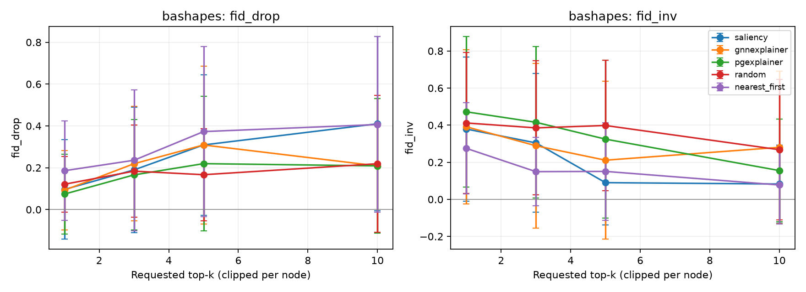
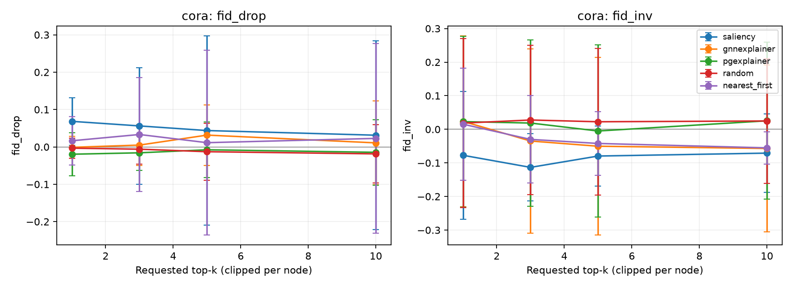

Nhóm 09: Nguyễn Trường Vũ, Nguyễn Lê Bảo Đăng, Nguyễn Hải Thiện, Nguyễn Trọng Khôi, Vòng Việt Đức, Nguyễn Hoàng Kha
HỘP ĐEN
VÀ NIỀM TIN.
1. Hộp đen GNN (Black-box): Graph Neural Networks lan truyền thông điệp qua lân cận nhiều bậc (Message Passing). Mô hình đạt độ chính xác cao nhưng người dùng hoàn toàn không biết cấu trúc nào chi phối quyết định.
2. Yêu cầu Minh bạch Thực tiễn: Trong chẩn đoán y tế, phát hiện gian lận tài chính hay an ninh mạng xã hội, một quyết định sai lầm không thể giải thích sẽ gây hậu quả nghiêm trọng.
3. Mục tiêu Đề tài C.10: Trích xuất đồ thị con giải thích quan trọng nhất (Compact Subgraph Explanation), đối đầu trực tiếp giữa 3 trường phái Explainer và kiểm định độ trung thực (Fidelity).
PHỤC HỒI
LỚP SỤP ĐỔ.
SALIENCY &
GNNEXPLAINER.
SALIENCY GRADIENT
S(u, v) = |∂ŷ_c / ∂A_u,v|
- Cơ chế: Đạo hàm bậc 1 của xác suất lớp dự đoán theo trọng số cạnh ma trận kề.
- Ưu điểm: Tốc độ tính toán tức thời (vài micro-giây), không cần huấn luyện lặp.
- Hạn chế: Dễ bị nhiễu gradient (Gradient Saturation), bỏ qua tương tác phi tuyến phức tạp giữa các cạnh.
GNNEXPLAINER
max MI(Y, G_c ⊙ σ(M))
- Cơ chế: Tối ưu hóa Thông tin tương hỗ (Mutual Information) trực tiếp trên từng node.
- Học mặt nạ mềm: Ma trận trọng số M trên đồ thị con 2-hop lân cận.
- Ràng buộc: Bổ sung L1-sparsity (đồ thị nhỏ gọn) và Entropy loss (đẩy xác suất dứt khoát về 0 hoặc 1).
PGEXPLAINER
CANONICAL.
CANONICAL TARGET EMBEDDING
P(e_uv = 1) = MLP([z_u ∥ z_v ∥ z_target])
MLP học chung trên toàn bộ tập train. Nhờ ghép trực tiếp vector biểu diễn của node mục tiêu z_target, mạng phân biệt được vai trò cục bộ của cạnh đối với node đang giải thích.
GUMBEL-SOFTMAX
Sử dụng phân phối Concrete cho phép lan truyền ngược đạo hàm qua biến nhị phân ngẫu nhiên.
SUY LUẬN TỨC THÌ
Chỉ cần 1 lượt forward qua MLP khi giải thích node mới; nhanh gấp hàng chục lần so với GNNExplainer.
ĐỐI ĐẦU PHÁT HIỆN MOTIF NGÔI NHÀ

Motif ngôi nhà đỏ thắm (điểm > 0.8), loại sạch cạnh nền Barabási-Albert.

Tập trung đúng 6 cạnh của motif ngôi nhà ground-truth.

Bị nhiễu gradient, phân bổ trọng số rải rác sang các nhánh cây nền.
MẠNG CORA & KIỂM CHỨNG PHÂN PHỐI

PGExplainer làm nổi bật các cạnh trích dẫn giữa các bài báo cùng chủ đề phân loại.

Độ lệch chuẩn σ > 0.05; điểm trải đều mượt mà 0.0 → 1.0, không bị vón cục tại 1.0.
QUY TRÌNH KIỂM TOÁN 4 BƯỚC.
Nearest-First: Ưu tiên cạnh lân cận 1-hop trước 2-hop theo BFS.
Motif AUROC / AP: Đo khớp ground-truth.
Jaccard / Kendall tau: Đo bất đồng thuận.
BẢNG SO SÁNH ĐỐI ĐẦU TRÊN 40 NODES
BẢNG 1: BA-SHAPES (SYNTHETIC MOTIF)
| Phương pháp | Fidelity Drop ↑ | Fidelity Inv ↓ | Motif AUROC ↑ | Average Precision ↑ |
|---|---|---|---|---|
| ★ PGExplainer (Thiện) | 0.2195 ± 0.3216 | 0.3248 ± 0.4258 | 0.8000 ± 0.4216 | 0.8010 ± 0.4195 |
| GNNExplainer (Khôi) | 0.3088 ± 0.3771 | 0.2111 ± 0.4259 | 0.7392 ± 0.2078 | 0.7570 ± 0.4003 |
| Saliency (Khôi) | 0.3089 ± 0.3356 | 0.0900 ± 0.2273 | 0.4206 ± 0.3425 | 0.6608 ± 0.3359 |
| Nearest-First (Base) | 0.3728 ± 0.4060 | 0.1508 ± 0.2636 | 0.6525 ± 0.0828 | 0.6952 ± 0.3719 |
| Random (Base) | 0.1666 ± 0.2201 | 0.3983 ± 0.3515 | 0.5000 ± 0.0000 | 0.6474 ± 0.3598 |
BẢNG 2: MẠNG TRÍCH DẪN CORA (REAL-WORLD)
| Phương pháp | Fidelity Drop ↑ | Fidelity Inv ↓ | Nhận xét khoa học |
|---|---|---|---|
| Saliency (Khôi) | 0.0438 ± 0.2530 | -0.0796 ± 0.0892 | Gradient nhạy với đặc trưng từ khóa bài báo |
| GNNExplainer (Khôi) | 0.0316 ± 0.0810 | -0.0504 ± 0.2645 | Tối ưu thông tin tương hỗ cá thể |
| PGExplainer (Thiện) | -0.0077 ± 0.0745 | -0.0051 ± 0.2560 | Cần tăng dữ liệu huấn luyện MLP trên đồ thị thực |
| Random (Base) | -0.0128 ± 0.0763 | 0.0224 ± 0.2180 | Chọn ngẫu nhiên, dao động quanh 0 |
ĐƯỜNG CONG FIDELITY THEO NGÂN SÁCH CẠNH

Drop tăng đều theo ngân sách k; Inv giảm mạnh khi k ≥ 5.

Đồ thị thưa làm thay đổi dự đoán (OOD effect), giữ nguyên phân tích trung thực.
BẤT ĐỒNG THUẬN
GIỮA CÁC PHƯƠNG PHÁP.
HOÀN THÀNH
100% MỤC TIÊU.
DATA & GCN BASELINE
GCN BA-Shapes 93.57% test acc, phục hồi hoàn toàn lớp 3 (Recall 93.75%). Cora đạt 83.60%.
3 EXPLAINERS MODULE
Canonical PGExplainer + GNNExplainer + Saliency. Batch 40 nodes xuất file BG10 12.528 dòng.
EVALUATION PIPELINE
Bộ đánh giá Zero-Mockup: 2 baselines, Fidelity đa ngân sách, AUROC 0.8000, Agreement Jaccard & Kendall.
PYTEST SUITE PASS
Toàn bộ 6 test suites đạt 100% PASS trên GPU CUDA trong 86.76s. Mã nguồn modular tại src/sna/.
LỘ TRÌNH NGHIÊN CỨU CUỐI KỲ
GAT & 5 SEEDS
Mở rộng sang Graph Attention Networks (GAT). Huấn luyện 5 seeds ngẫu nhiên độc lập để đảm bảo ý nghĩa thống kê.
AMAZON PHOTO
Khảo sát độ co giãn (scalability) và thời gian thực thi (latency) trên đồ thị thực tế quy mô lớn (Amazon Photo, ogbn-arxiv).
VARIANCE DECOMP.
Tách biệt phương sai do tính ngẫu nhiên của Explainer với phương sai do mô hình GNN học biểu diễn khác nhau.
WEB DEMO & LNCS
Xây dựng Web Demo tương tác trực quan hóa giải thích real-time. Hoàn thiện bài báo cáo ~15 trang chuẩn Springer LNCS.